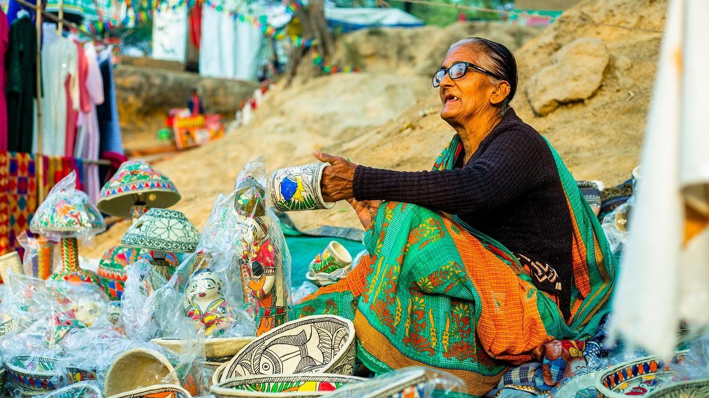
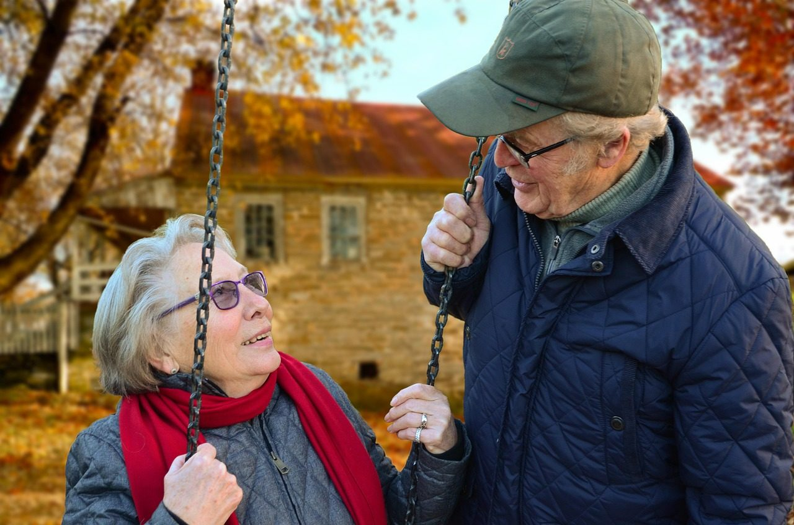
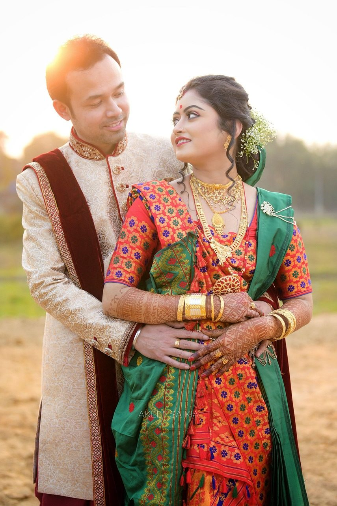

पारिवारिक मिलन
परिवारों को सम्मानजनक वातावरण में परिचय और संवाद का अवसर देना।
सशक्त समाज, सुरक्षित परिचय और सम्मानजनक पारिवारिक निर्णय।
संस्था परिवारों को जोड़ने के साथ गोपनीयता, जागरूकता और जिम्मेदार निर्णय को प्राथमिकता देती है। सामाजिक गतिविधियाँ उपलब्ध संसाधनों और घोषित कार्यक्रमों के अनुसार आयोजित की जाती हैं।
परिवारों को सम्मानजनक वातावरण में परिचय और संवाद का अवसर देना।
मोबाइल नंबर, पता और संवेदनशील बायोडाटा खुले वेब पर प्रकाशित न करना।

शिक्षा, आत्मनिर्भरता और सम्मानपूर्ण निर्णय के प्रति जागरूकता।
स्वास्थ्य और सुरक्षित जीवन से जुड़ी उपयोगी सामाजिक जानकारी को बढ़ावा देना।
साइबर फ्रॉड, गलत जानकारी और वैवाहिक ठगी से बचने के लिए सतर्कता।

परिवार और समाज में वरिष्ठ सदस्यों के अनुभव एवं सम्मान का महत्व।
विविध समाजों और परिवारों के बीच सद्भाव तथा पारंपरिक मूल्यों का सम्मान।

पूरी जाँच, स्पष्ट संवाद और युवक-युवती की स्वतंत्र सहमति से निर्णय।